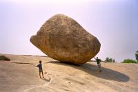

|
Dimanche 25 mars
Mahabalipuram, qu'on peut aussi ecrire Mamallapuram, c'est un peu au nord de
Pondicherry. Des que nous y sommes arrives, on s'y est sentis bien. C'est un
village de tailleurs de pierres, au bord de la mer. Sur la plage, il y a un
temple, on a pu le voir au loin assis sur une grosse barque de pecheurs rangee
sur le sable. Il n'y a pratiquement jamais de vehicules qui passent, car les
rues ou il est agreable de se ballader sont en retrait de la rue principale
ou le bus nous a deposes. Ici, les bruits de moteur sont remplaces par le bruit
des burins et marteaux, beaucoup moins violents et presque harmonieux.
En plus, on a trouve un endroit vraiment chouette pour habiter. Ce n'est pas
luxueux, les toilettes et la douche sont communes. Mais c'est res bien tenu,
tres colore et partout il y a des plantes et des arbres: des papayes, des bananes,
des bananes rouges (ce sont les meilleures), des "jackfruits" (on ne sait toujours
pas ce que c'est), des oranges, des fleurs qui sentent la salade de fruits,...
Mais surtout, ce qui est genial au "Erwin Danussi Cottage", c'est qu'on a l'impression
de partager un bout de vie avec la proprietaire Frida et sa fille Emilie (tout
juste 20 ans). Elle n'ont que 2 chambres, elles etaient deja prises -par des
francais. Qu'a cela ne tienne! Elles ont debarrasse leur propre chambre, une
toute petite piece bien remplie. Il y a partout des bagages que des touristes
laissent la pendant qu'ils se balladent dans le coin, deux grosses armoires,
et sur le cote un grand lit couvert d'une moustiquaire toute trouee! Juste a
cote, une petite piece ouverte sur la courette, ou trone une television. Je
ne sais pas ce qu'il y avait au programme ce soir, mais elles se bidonnaient
toutes les deux juste avant de dormir sur le matelas pose par terre... devant
notre porte. On etait bien garde!
Lundi 26 mars
Bonne ballade de long en large, sur la plage avec ces droles de barques de
pecheurs (en fait des morceaux de bois attaches ensemble qui remontent tres
legerement devant et derriere) autour du temple du Rivage, dans un bistrot (faut
bien s'abreuver), dans les rues au milieu des tailleurs de pierres, le long
de la fresque representant la descente du Gange canalisee par Shiva dans ses
cheveux (on y voit meme un chat qui fait le yogi et des souris qui dansent a
ses pieds! et un elephant qui se transforme en vache selon l'angle sous lequel
ou on regarde, ils sont forts ses sculpteurs sur rochers, et quel humour!) et
plein de petits temples sympas. Cette ballade nous a permis de prendre nos premiers
vrais coups de soleil malgre l'ecran total applique 2 fois en 3 ou 4 heures
en couches genereuses!
L'entree de nombreux monuments indiens est desormais payante et pas qu'un peu!
C'est plutot recent (septembre ici). Les touristes etrangers paient plus cher
que les indiens. Chacun selon son pouvoir d'achat, a priori, OK. Mais quelques
fois, c'est dingue. On avait deja vu ca avec le Taj Mahal (pres de 1000 roupies
chacun, 20 pour les indiens), le Fort Rouge d'Agra (500 rps). A Gingee a nouveau,
la visite e quelques vieilles pierres gratuites jusqu'a present oblige a debourser
250 roupies (5 pour les indiens). Et ici, c'est le temple du rivage dont le
prix est exhorbitant: 450 Rps (10 pour les indiens). Du coup seuls les touristes
en voyage organise ("all include", lesquels semblent d'ailleurs se developper
en Inde) y vont, les "individuels" regardent au-dessus des barrieres! 450 roupies,
ca fait presque 75 FF, compare au cout e la vie ici, c'est fou (100 roupies
la nuit, 25 pour un repas complet...). Compare a des activites culturelles en
France (musees, cine, …), c'est aussi tres cher. De plus comme dit Lionel, pour
eux ces temples sont hypers importamts. Leur religion hindoue y est representee
et les representations sont l'un des ciments de l'hindouisme. Mais pour nous,
ce sont certes de beaux minuments, de belles sculptures, mais ils ne representent
pas le meme interet, ils ne sont pas aussi charges de mythes et de croyances.
Le prix devient alors prohibitif. C'est dommage et ils sont les premiers a le
reconnaitre, car du coup les touristes n'y vont plus et leur culture devient
moins abordable et surtout moins abordee. Sans compter qu'il faudrait peut etre
mieux avoir 50 visiteurs a 50 Rps que 5 a 450. Mais comme partout, c'est le
gouvernement qui decide, et comme partout, il est lent a se lancer, lent a s'apercevoir
de ses erreurs et hyper lent a les reparer. Longtemps, les droits de visite
ont ete symboliques, une periode d'exces demarre, peut etre que dans quelques
annes le prix sera le bon, rapportant assez pour l'entretien et le developpement
mais sans etre une barriere... Qui vivra verra.
Je crois que les indiens sont hypers conviviaux... Lors de notre ballade, comme
lors de TOUTES nos ballades, nous n'avons jamais ete seuls. Un petit garcon
a d'abord commence a nous suivre, non sans avoir pose les questions rituelles:
what's your name, where do you come from, how long you stay in india... Comme
ca, gentiment parce que "today is holliday so school is closed". Puis un plus
age nous a accompagnes racontant plein de choses notamment sa vie (il va se
marier et partir vivre a Toulouse avec sa copine etudiante la bas en ecole d'infirmiere
mais a part ca il est tailleur de pierres et d'ailleurs sa boutique est tout
pres... -sic) a Lionel, puis d'autres, grands et petits attendant patiemment
que le precedent ait fini pour commencer leur prose. C'est plutot sympa, sauf
qu'on ne peut meme plus discuter sans etre interrompus -parfois avec force-
par nos gentils accompagnateurs! En plus, ils essaient tous de nous expliquer
tout ce qu'il y a a voir, si bien qu'en plus des 2 lectures du routard, nous
avons eu 3 ou 4 fois l'explication de la fresque de pierre (plus de 20 metres
de long sur 9 de haut). Le point commun a tous: apres 5 ou 50 minutes de discussion
(ou monologie quand nous etions lasses) tous avaient quelque chose a nous vendre,
un magasin a montrer "only look, don't like, don't buy", ou quelques roupies
a nous demander "pour les services rendus" je suppose. Alors, conviviaux les
indiens ou plutot patients et indirects en affaires? Peut etre bien les deux.
Le truc agaçant, ils ne veulent pas comprendre que visiter les magasins toute
la journée ce n'est pas vraiment notre tasse de thé, ni que ce n'est pas parce
qu'on aime bien quelque chose qu'on va l'acheter. Chacun défend son bifteck,
je le comprends tout à fait, mais ce n'est pas une raison pour acheter 10 fois
la même chose, même si c'est à 10 vendeurs différents.
Suite du voyage : Tirukalikundram
|
Inde
Mahabalipuram
|
Inde
Mahabalipuram
|

Inde
Mahabalipuram
|

Inde
Mahabalipuram
|
|
|